L'histoireCocolint a disparu… pas tout à fait
Le Poisson-Rêve s'est réveillé. Marine avait fait un vœu : avoir des ailes pour partir au-delà de la mer. Elle revient en mouette, auprès de Link, dans un archipel où plus personne ne rêve.
Pourquoi les rêves se sont-ils éteints ? Et que reste-t-il de Cocolint… quand on ferme les yeux ?
Gulls of Life : gulls (les mouettes) sonne comme goals (les buts). On réalise ses rêves, on n'y reste pas.
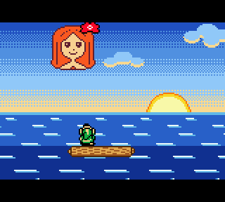
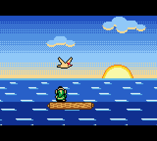
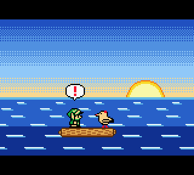
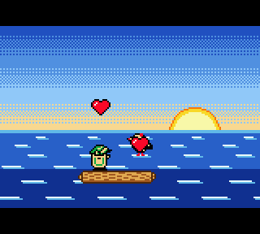
La promesseCe qui vous attend
Un vrai Zelda, fait pour la Game Boy Color : de nouvelles îles, de nouveaux donjons, de nouvelles musiques. Et une mouette qui a son mot à dire.
Des musiques originales
Composées pour le jeu, note à note : une ballade tendre à l'écran titre, l'air des îles, la chaleur de l'auberge, le vent autour du phare…
Une musique épique
Quand le combat commence, l'orchestre se déchaîne. Des thèmes dans l'esprit des grandes orchestrations, tenus dans les quatre voix de la Game Boy.
Un nouveau thème
La Ballade de la Mouette, le thème du jeu. Douce, puis furieuse : vous l'entendrez sous bien des formes.
De nouvelles mécaniques
Le rêve et l'éveil ne jouent pas selon les mêmes règles. Apprenez les deux… et servez-vous de l'un contre l'autre.
De nouveaux mini-jeux
Parce qu'une île sans jeux, ce n'est pas une île de Zelda. Attendez-vous à quelques surprises.
De vrais temples
Un objet clé, des énigmes taillées pour lui, et des boss qui ont la langue bien pendue. Courts, denses, à finir d'une traite.
AperçuQuelque part au-delà de la mer
Pas plus : le reste, c'est à vous de le découvrir.
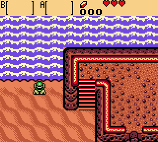
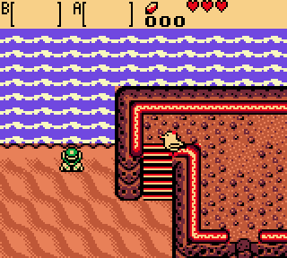
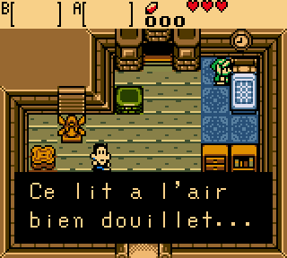
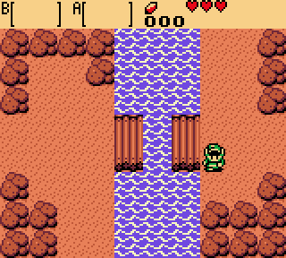
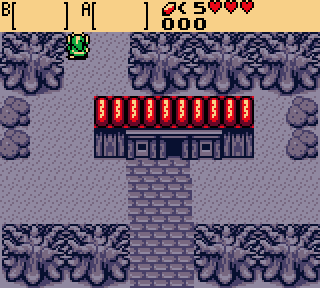
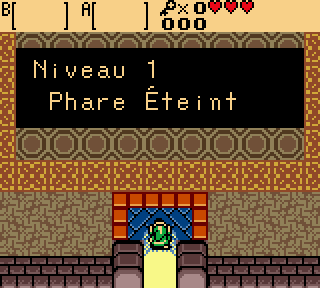
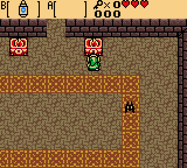
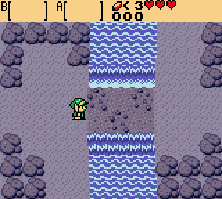
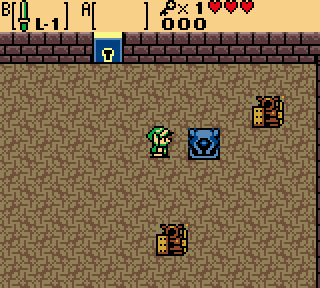
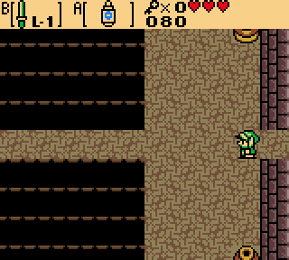
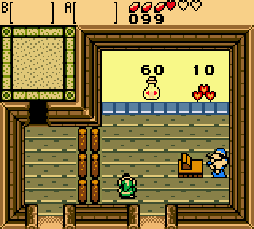
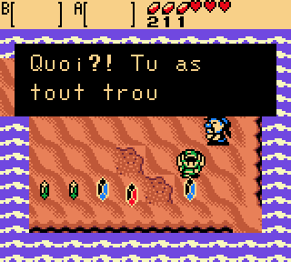
Le mondeL'archipel des Sans-Sommeil
Huit îles, et un rondin pour bateau. Tout commence sur l'île de la Brume.
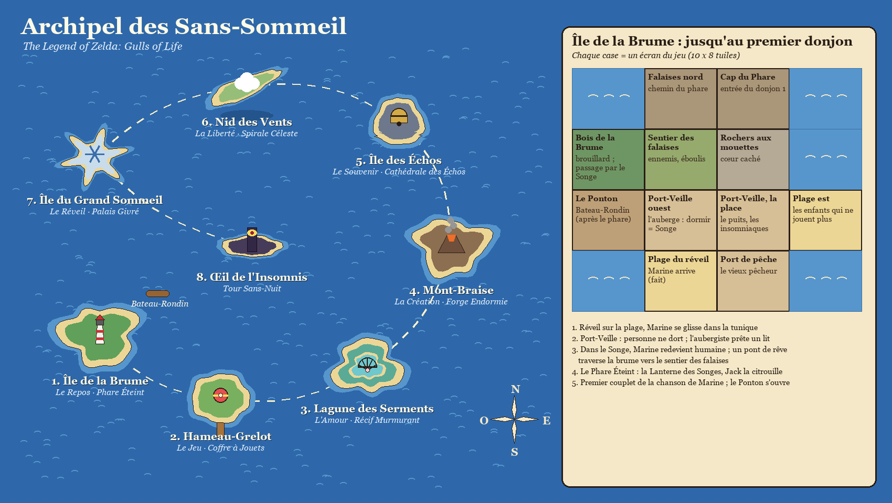
Démo v1.0/1.1Jouer à la démo
Tout le premier chapitre. C'est un patch à appliquer sur sa propre ROM Oracle of Ages (USA) : aucune ROM n'est fournie.
En français ou en anglais, menus compris : on choisit en se réveillant sur la plage, et la sauvegarde s'en souvient (seul le tout premier démarrage est en anglais).
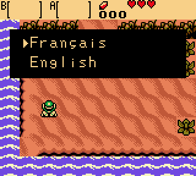
- Selectla carte
- Select maintenuMarine a son mot à dire
- A, devant un litdormir
Comment appliquer le patch
- Télécharger
gulls_of_life.bpsdans la version v1.0/1.1. - Avoir sa propre ROM The Legend of Zelda: Oracle of Ages, version USA (CRC32
3800a387). - Appliquer le patch avec un outil BPS, par exemple Rom Patcher JS en ligne.
- Jouer le fichier obtenu (CRC32
b9011dfa) dans n'importe quel émulateur Game Boy Color.
Quoi de neuf dans la v1.0/1.1
- Le Phare Éteint refait : des énigmes, des allers-retours, trois petites clés, des coffres de rubis, plus de salle vide
- Jack est plus coriace
- Une vraie fin : plus d'écran noir, on voit les gens qu'on a sauvés… et Marine a son mot à dire
- La boutique de Port-Veille : des cœurs, et une fée en bouteille qui vous relève
- Le Creuse-Rubis du forain : trois niveaux, et un quart de cœur à gagner
- La carte du donjon dit enfin « Phare Éteint »
- v1.0/1.1 : la v1.0/1 (un donjon), mise à jour
Journal de quêteOù on en est
- Le film d'ouverture
- Chapitre 1 : l'île de la Brume
- Le premier donjon : un vrai temple, son objet et son boss
- L'écran titre Gulls of Life
- Français et anglais, menus compris
- Démo jouable v1.0/1.1
- Les sept autres îles
- Des musiques originales : écran titre, île de la Brume, auberge, phare, miniboss et boss
- Un premier mini-jeu : le Creuse-Rubis du forain
- D'autres mini-jeux
- Des secrets et des quarts de cœur
- Les musiques des autres îles
- Et la suite de l'histoire…
Les coulisses (technique)
Le jeu tourne sur le moteur d'Oracle of Ages, grâce au désassemblage complet oracles-disasm de Stewmath. Tout le reste est nouveau : histoire, îles, salles, film, sprites et dialogues.
Les instructions de compilation et les outils sont dans le dépôt.
| Dialogues | écrits en français normal dans story/textes.yaml et en anglais dans story/textes.en.yaml, largeur des lignes vérifiée (16 caractères) |
| Sprites | dessinés en texte dans art/, convertis par un script |
| Salles | plans texte dans story/salles/ (10 × 8 briques par écran) |
| Film | ciel, nuages, soleil, mer et rondin fabriqués par tools/make_film.py |
| Carte | dessinée par tools/make_map.py |
| Tests | la ROM jouée dans PyBoy, avec captures |
| Patch | fabriqué par tools/make_patch.py |
./setup.sh ./build.sh # → out/gulls_of_life.gbc